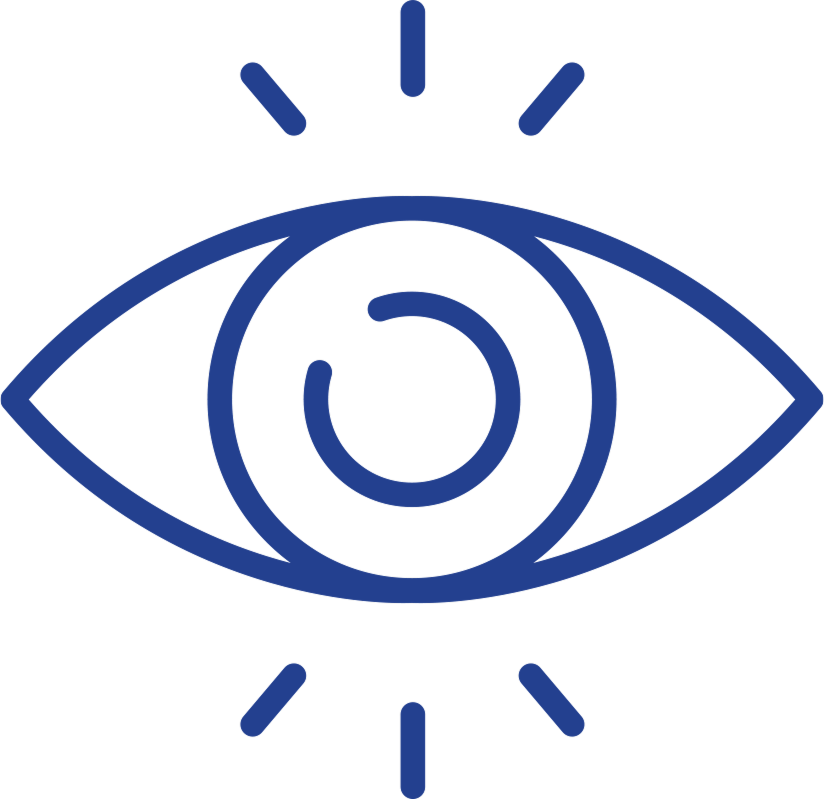
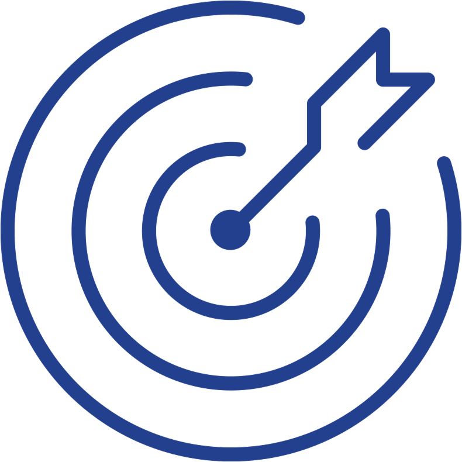
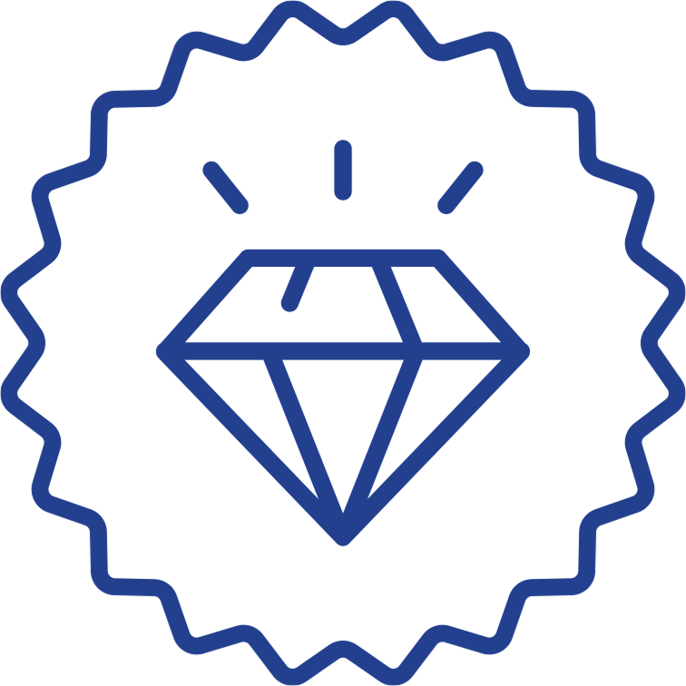
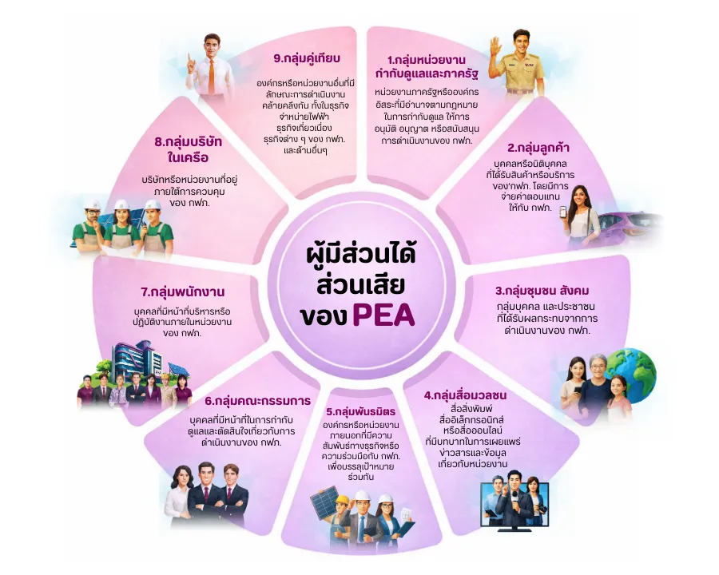

ข้อมูลองค์กร
การไฟฟ้าส่วนภูมิภาค หรือ Provincial Electricity Authority (PEA) เป็นรัฐวิสาหกิจสาขาพลังงาน สังกัดกระทรวงมหาดไทย อยู่ภายใต้การกำกับดูแลของสำนักงานคณะกรรมการนโยบายรัฐวิสาหกิจ (สคร.) ดำเนินธุรกิจหลัก ในการจัดหาและให้บริการจำหน่ายไฟฟ้าแก่ผู้ใช้ไฟฟ้าในพื้นที่ส่วนภูมิภาค รวมถึงธุรกิจที่เกี่ยวเนื่อง ทั้งในเชิงธุรกิจเสริมที่สนับสนุนลูกค้าของ PEA ได้แก่ งานก่อสร้างให้ผู้ใช้ไฟฟ้า งานตรวจสอบและซ่อมบำรุงรักษา และธุรกิจใหม่ที่ต่อยอดการใช้ประโยชน์จากสินทรัพย์หรือความรู้ความสามารถที่มีในการขยายการเติบโต หรือธุรกิจที่มีศักยภาพเติบโตในอนาคต เพื่อให้บริการพลังงานไฟฟ้ามีความมั่นคงและเพียงพอต่อความต้องการใช้ไฟฟ้าของผู้ใช้ไฟฟ้า โดยมีสำนักงานใหญ่ตั้งอยู่ที่ เลขที่ 200 ถนนงามวงศ์วาน แขวงลาดยาว เขตจตุจักร กรุงเทพมหานคร 10900 รับผิดชอบจำหน่ายไฟฟ้าในพื้นที่ 74 จังหวัดของประเทศไทย ยกเว้น กรุงเทพมหานคร นนทบุรีและสมุทรปราการ ซึ่งคิดเป็นร้อยละ 99 ของพื้นที่ประเทศไทย หรือประมาณ 510,000 ตารางกิโลเมตร โดยมีจำนวนผู้ใช้ไฟฟ้ากว่า 22 ล้านราย

วิสัยทัศน์
ไฟฟ้าอัจฉริยะเพื่อคุณภาพชีวิตที่ดีอย่างยั่งยืน
Smart Energy for Better Lifeand Sustainability

ภารกิจ
ผลิต จัดหา ให้บริการพลังงานไฟฟ้า และดำเนินธุรกิจอื่นที่เกี่ยวเนื่อง เพื่อตอบสนองความต้องการและสร้างคุณค่าให้กับผู้มีส่วนได้ส่วนเสีย อย่างยั่งยืน มีความรับผิดชอบต่อสังคมและสิ่งแวดล้อม

ค่านิยม
ทันโลก บริการดี มีคุณธรรม
ข้อมูลโดยทั่วไป
| ชื่อองค์กร | การไฟฟ้าส่วนภูมิภาค (กฟภ.) หรือ Provincial Electricity Authority (PEA) |
|---|---|
| CEO | นายมงคล ตรีกิจจานนท์ |
| วันที่ก่อตั้ง | วันที่ 28 กันยายน พ.ศ. 2503 |
| เว็บไซต์ | https://www.pea.co.th |
| สำนักงานใหญ่ | 200 ถนนงามวงศ์วาน แขวงลาดยาว เขตจตุจักร กรุงเทพมหานคร 10900 |
| จำนวนสำนักงาน (รวมสำนักงานบริการ โรงงานไฟฟ้าและโรงงานคอนกรีต) | 958 แห่ง (ข้อมูล ณ วันที่ 31 ธันวาคม พ.ศ. 2567) |
| จำนวนพนักงาน (รวมพนักงานและลูกจ้าง) | 32,921 (ข้อมูล ณ วันที่ 31 ธันวาคม พ.ศ. 2567) |
กรอบการดำเนินงานด้านการบริหารความยั่งยืนและการจัดการผู้มีส่วนได้ส่วนเสียของการไฟฟ้าส่วนภูมิภาค
วิสัยทัศน์ (Vision)
ไฟฟ้าอัจฉริยะเพื่อคุณภาพชีวิตที่ดีอย่างยั่งยืน
Smart Energy for Better Life and Sustainabilityภารกิจ (Mission)
ผลิต จัดหาให้บริการพลังงานไฟฟ้า และดำเนินธุรกิจอื่นที่เกี่ยวเนื่องโดยยึดหลักธรรมาภิบาล เพื่อตอบสนองความต้องการและสร้างคุณค่าให้กับผู้มีส่วนได้ส่วนเสีย โดยดำเนินธุรกิจอย่างรับผิดชอบต่อสังคมและสิ่งแวดล้อม เพื่อการเติบโตที่ยั่งยืน
วัตถุประสงค์
เพื่อมุ่งสู่ความยั่งยืนและตอบสนองความต้องการ/ความคาดหวังของผู้มีส่วนได้ส่วนเสีย สร้างความสัมพันธ์ที่ดีเพื่อบรรลุเป้าหมายและเติบโตร่วมกับพันธมิตร สร้างวัฒนธรรมองค์กรที่มุ่งเน้นความยั่งยืนและผู้มีส่วนได้ส่วนเสีย
ขอบเขต
ครอบคลุมทุกกระบวนการตามสถาปัตยกรรมธุรกิจของ กฟภ.
Sustainable Development
มุ่งมั่นสร้างอนาคตที่ยั่งยืนผ่านการพัฒนาระบบไฟฟ้าอัจฉริยะและการมีส่วนร่วมของทุกภาคส่วน
Relationship
ร่วมมือกับพันธมิตร สร้างธุรกิจยั่งยืน ตอบโจทย์ทุกกลุ่มผู้มีส่วนได้ส่วนเสีย
Organization Development
พัฒนาระบบและสร้างบุคลากรเพื่อขับเคลื่อนความยั่งยืน
ผู้มีส่วนได้ส่วนเสียของการไฟฟ้าส่วนภูมิภาค
